DMQC
This section is dedicated to Delayed Mode Quality Control activities.
Tools for DMQC
This page aggregates the information related to DMQC tools available to Argo DMQC community
- the GitHub repository for OWC https://github.com/ArgoDMQC/matlab_owc
- the GitHub repository for the PMEL GUI https://github.com/ArgoDMQC/PMEL_GUI
- the GitHub repository for the SOCCOM/BGC-Argo processing https://github.com/SOCCOM-BGCArgo/ARGO_PROCESSING
- the visual quality control for Argo NetCDF data files Scoop-Argo https://www.seanoe.org/data/00374/48531/
Webpage to be updated in the coming months. In the meantime please refer to the list provided here.
What float should I process first?
The following information are available :
- WHOI analysis to detect possible drift http://argo.whoi.edu/argo/sbedrift_wmo/
- Check against altimetry https://data-argo.ifremer.fr/etc/argo-ast9-item13-AltimeterComparison/
- Check at Coriolis using Argo MinMax climatology tests are available in monthly Coriolis GDAC reports : https://data-argo.ifremer.fr/etc/Report_ObjectiveAnalysisWarning/
- DM consistency checks in the North Atlantic http://www.umr-lops.fr/en/SNO-Argo/Activities/NAARC/Consistency-checks-of-DM-salinity-corrections
The DMQC Mentoring System for Argo CTD data
In order to preserve and share DMQC knowledge for CTD data within the Argo community, one-on-one interactions are needed in addition to detailed documentation of methods. Therefore a DMQC Mentoring System has been set up so that new operators can reach out to a mentor of choice to learn more about DMQC activities in a personalised setting.
The following is the list of experienced delayed-mode people, in alphabetical order, and their areas of expertise, who have volunteered to be mentors:
- Uday Bhaskar (uday@incois.gov.in) - North Indian Ocean
- Cecile Cabanes (cecile.cabanes@ifremer.fr) - North Atlantic Ocean
- John Gilson (jegilson@gmail.com) - North Pacific Ocean, South Pacific Ocean, South Indian Ocean
- Shigaki Hosoda (hosodas@jamstec.go.jp) - North Pacific Ocean
- KiRyong Kang (krkang@kma.go.kr) - Yellow Sea, East Sea
- Birgit Klein (Birgit.Klein@bsh.de) - Southern Ocean, Nordic Sea
- John Lyman (john.lyman@noaa.gov) - North Pacific Ocean, South Pacific Ocean
- Giulio Notarstefano (gnotarstefano@inogs.it) - Mediterranean Sea, Black Sea
- Pelle Robbins (probbins@whoi.edu) - North Atlantic Ocean, South Atlantic Ocean
- Annie Wong (apsw.uw@gmail.com) - Southern Ocean, South Pacific Ocean, South Indian Ocean, South Atlantic Ocean
If you are new to Argo DMQC for CTD data and would like to work with a mentor, please contact one of the volunteers above.
Argo Reference database for delayed mode QC
The free-moving nature of profiling floats means that most float measurements are without accompanying in-situ “ground truth” values for absolute calibration (such as those afforded by shipboard CTD measurements). Therefore Argo delayed-mode procedures for checking sensor drifts and offsets in salinity rely on reference datasets and statistical methods.
Latest version of the Argo reference database
The CTD reference database for Argo is updated on a yearly bases by Coriolis team or when there are enough new data to justify an upgrade. The CTD are provided by the PIs, the ARC, Clivar Hydrographic Center and NODC/USA. In areas with poor CTD data, good Argo profiles are used for the delayed mode QC. This Argo reference database is updated by SCRIPPS (J Gilson).
Access to reference databases
Because the CTD database may contain CTD data that is not yet freely available, access is restricted to those performing DMQC on the data. To request access, email codac@ifremet.fr.
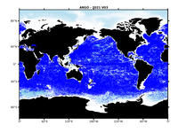
December 2021 A new version of the CTD reference database (2021V02) is available on the ftp site. This version takes into account some corrections following the feedback received by the users. Some CTDs have also been added: CTDs provided by scientists, CTDs made during float deployments and some GO-SHIP CTDs retrieved from the CCHDO website.
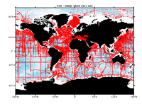
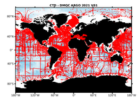

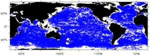
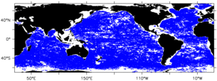
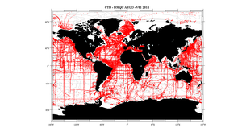
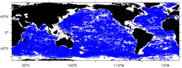
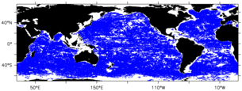
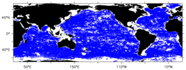
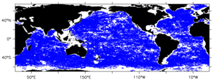
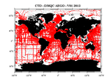
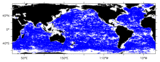
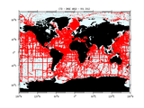
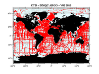
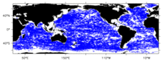
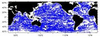
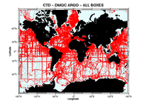
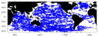
Argo profile reference database October 2008
July 2008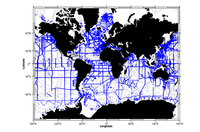
Argo CTD Reference Data base July 2008
The updated reference database for ARGO, including the WOD05 CTD, is now available at Coriolis. This version, that you must reference as ARGO2008V01, takes into account the conversion ITS90 to ITS68 for the temperature. The Argo float Ref DB (argo_clim) provided by John Gilson is also available on the same ftp site.
Note : If you detect an anomalie in the ARGO2008V01 database, please report to codac indicating the code ‘source’ of the station concerned (in the file ctd_<n°box>.mat) and the correction to be applied : the “source” code allow us to link the data provider and the reference of the station and to provide feedback to the provider to avoid getting the same problem while updating the database.
Previous versions of Argo Reference Data Base
To process delayed mode quality control on floats, each DM operator has improved the database for his area and we have at present 4 different reference databases : SeHyd for the Pacific, IOHB for the Indian, BS (Böhme-Send) + ATL CTD or Hydrobase for the Atlantic.
SeHYD and IOHB are available in a form suitable as input files (wmo_boxes) fro WJO/OW. IOHB has data formatted in both WJO standard levels and as full profiles. SeHYD is available only at WJO standard levels.
On the following links, you will have access to those different regional reference databases :
Atlantic Ocean Recent CTD from Coriolis and Böhme-Send method contact : Codac Atlantic Hydrobase : web site hydrobase
Pacific Ocean SeHyd from JAMSTEC contact : Taiyo Kobayashi
Indian Ocean Indian Ocean HydroBase from JAMSTEC IOHB contact : Taiyo Kobayashi
Southern Ocean SODB : web site SODB
CCHDO Clivar & Carbon Hydrographic Data Office Link to the CCHDO web site CCHDO has extracted for ARGO recent CTD( 2001-2006) and made them accessible to the Argo Delayed mode operators. These data ore on the ifremer ftp site. Please contact codac@ifremer.fr to get an user name / password
Be careful that all those datasets must be only used for the delayed mode quality control of the Argo floats, some data of the added cruises have confidential access.